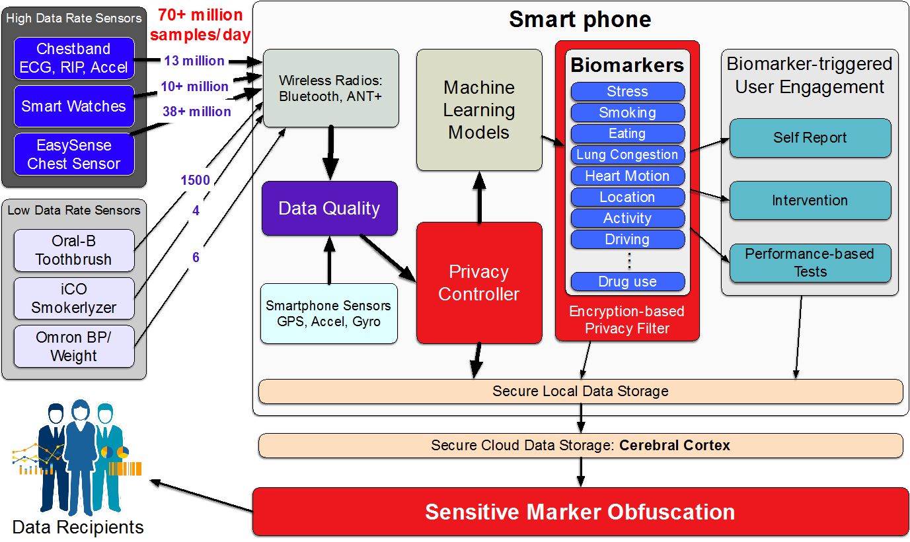

mCerebrum
Smartphones with embedded and wirelessly connected sensors have revolutionized health and wellness management via numerous apps. These technologies are also fueling the next generation of health research and are leading to novel interventions to improve health and wellness [14]. But, their future momentum critically depends on our ability to discover and validate new biomarkers for assessing health, wellness, daily behaviors, and contextual factors.
Development and validation of any new mHealth biomarker requires conducting research studies in lab and field settings to collect raw sensor data with appropriate labels (e.g., self-reports). Raw sensor data are of increasing interest as it significantly expands the useful life of the information collected. Similar to biomedical studies that often archive biospecimens in biobanks so they can be reprocessed to take advantage of future improvements in assays and support biomedical discoveries not possible at the time of data collection, raw sensor data can be used to obtain new biomarkers that were not available at the time of data collection.
For example, if the activity trackers stored raw sensor data from accelerometers and gyroscopes (100+ HZ instead of few samples of activity counts per day), the same sensor data can also be used to track eating, drinking, brushing, smoking, etc. from hand gesture signatures, in addition to activity counts. Doing so, however, requires a mobile phone software platform that can be used to collect both high-rate raw sensor data and associated labels in field.
A general-purpose software platform that can enable such data collection needs several attributes. First, it must support concurrent connections to a wide variety of high-rate wearable sensors with an ability to plug-in new sensors. Second, it must ingest the large volume of rapidly arriving data for which native support does not yet exist in the smartphone hardware or operating system without falling behind and losing data. Third, it needs to support reliable storage of quickly growing volume of sensor data, whose archival is critical to the development and validation of new biomarkers. Fourth, it is desirable to quickly analyze incoming data to monitor signal quality so any errors in sensor attachment or placement can be fixed quickly to maximize data yield. Fifth, it needs to support the sense-analyze-act pipeline for high-rate streaming sensor data. This is necessary to prompt self-reports (for collection of labels) as well as confirm/refute prompts for validation of new biomarkers in the field. Sense-analyze-act support is also needed to aid development and evaluation of sensor-triggered interventions.
Sixth, it needs seamless sharing of streaming data from multiple sensors to enable computation of multi-sensor biomarkers (e.g., stress, smoking, eating). Seventh, the platform needs to be general-purpose and extensible to support a wide variety of sensors, biomarkers, and study designs. Eighth, it needs to be architecturally scalable so that it can support concurrent computation of a large number of biomarkers (each of which requires complex processing) without saturating the computational capacity or battery life of the mobile phone. Finally, it needs to carefully control interruptions to study participants from various sources (e.g., self-report, ecological momentary assessment (EMA) and interventions (EMI), fixing sensor attachments) limiting user burden and cognitive overload while satisfying the numerous study requirements.
mCerebrum is an open-source, generalizable, and reusable platform that meets the requirements listed above, in particular, high-rate data ingestion, real-time biomarker computation, and burden-aware prompting. The design of mCerebrum has evolved from its use in ten research studies with unique study requirements and diverse health targets (see Table 1). To accomplish efficient ingestion and real-time processing of high-rate sensor data (70+ million samples/day) for multi-sensor biomarkers, mCerebrum uses an efficient data exchange architecture (called DataKit). To ease the burden of frequent and complex computation for biomarkers, the architecture natively supports computation reuse and microbatching.
To ensure extensibility to new sensors and generalizability to diverse study goals, mCerebrum uses a common data format that is flexible for current and future data types, yet efficient for communication. To reduce latency and overhead associated with storing rapidly growing sensor data (up to 2GB/day), mCerebrum uses a new scalable storage architecture called Pebbles. Burden-aware scheduling of user prompts is achieved through a bipartite graph design with gradual escalation to ensure meeting study goals, while using adaptive feedback for managing user burden.
Evaluations show that when inserting 1k samples at a time, mCerebrum ingests 9.65k samples/s, which is 1.5 times higher than AWARE [7] (and 7 times higher for 1 sample insertions). For high-rate storage, mCerebrum achieves 92% of optimal throughput, which is 4.3 times higher than AWARE [7]. Via microbatching of data ingestion and enabling efficient reuse of computation, mCerebrum achieves significantly lower CPU utilization (8.4 times lower than AWARE [7]), which is necessary to enable real-time computation of multi-sensor biomarkers from high-rate sensor data.
mCerebrum vs. Existing Software Platforms
Table 1: A comparison of different extensible mHealth frameworks that support external sensors
The first set of platforms related to mCerebrum are various commercial systems, which broadly fall into two categories. Among these are the data collection systems that have been created by vendors of wearables such as Fitbit, Withings, Polar, and Garmin. Typically, they provide mobile apps to let users visualize the data and back-end cloud services for storage, web-based access, and RESTful API based distribution to other applications and services. Besides being limited to supporting only vendor-specific devices, most of these systems are designed to collect low-rate biomarkers computed on the device (e.g. step count) instead of high-rate raw sensor data and limit access by third-party applications to be only via web service APIs. In rare cases, the raw high-rate sensor data is exposed via an SDK to third-party smartphone apps, such as with Microsoft Band, but then nothing else is usually provided. (Table 1 summarizes the comparison of mCerebrum, on key desired attributes, with existing software platforms for conducting mHealth research studies.)
The second category of commercial systems are software platforms from the major ecosystem players (Apple, Google, and Microsoft) that are device and application vendor agnostic, and provide support for a richer suite of services. Of these, the most well-known are Apple’s HealthKit and ResearchKit services [13, 25] where the former provides a smartphone based storage engine optimized for collection and querying of a broad spectrum of health-related sensor data, and the latter provides organizers of research studies, that make use of such data, support for study management functions such as subject recruitment. However, unlike mCerebrum, the HealthKit targets low-rate data and has no native support for other critical functions such as data quality assessment, biomarker computation, privacy management, and context-triggered user data collection, notifications, and interventions.
Capabilities similar to HealthKit and ResearchKit are provided in the Android world respectively by a combination of Google Fit [8](a cloud-based data collection and distribution service that is tightly knit with Android) and various systems that have either ported ResearchKit to Android or seek to provide similar study management functions. These too target low-rate sensor data collection with no integrated support for data quality assessment, biomarker computation, privacy management, and context-triggered user data collection, notifications, and interventions. Microsoft’s HealthVault is a similar product in this space and shares the same limitations.
Also relevant to mCerebrum are various research systems that have sought to provide software frameworks for sensor data collection in social, participatory, and mobile health sensing, such as ContextPhone [20], Jigsaw [16], Funf [1], UbiqLog [24], Ohmage [32], AWARE [7], Lifestreams [12], and many others. While some of these systems such as Jigsaw, Funf, and AWARE have targeted high-rate sensors, most of them are optimized for low-rate collection or for local storage. Almost all lack other key functions of data quality assessment, biomarker computation, privacy management, context-triggered user data collection, notifications, and interventions. Moreover, these systems, for the most part, remain limited to small-scale academic usage. By contrast, mCerebrum is not only capable of high performance data collection and provides a far more comprehensive set of functions and sensor support, but has also proven its robustness and scalability in mission-critical settings via its adoption in multiple large studies by independent researchers.
Open DataKit (ODK) [4] is one of the earliest platforms to support high-rate sensor data collection from Bluetooth and USB-based wearable sensors. New driver services can be added dynamically as plugins to acquire data from external devices as binary streams. ODK encodes the stream as meaningful representations before finally making it available to one target application through the framework. ODK does not allow top level applications to exchange data among themselves through the framework, limiting support for real-time computation of biomarkers.
AWARE [7] is a framework that supports data collection from phone sensors (e.g. accelerometer, gyroscope), phone activities (e.g. calendar, call, message), and self-report (e.g. questionnaires, voice, data labeling). AWARE supports plug-ins of external sensors; however, plug-ins are responsible for managing their own data storage and sharing. This limits the scalability of storage for high-rate sensor data, overall throughput, and CPU utlization.
In addition to software platforms that support data collection from sensors, some platforms are optimized for collection of self-reports. First, Commcare [2] is a commercial software tool that allows creation, editing, and deployment of mobile applications for research studies without a software developer. It supports complex logic that can guide a participant to ask the right questions and provide appropriate advice. This platform should be capable of collecting low-rate biomarker data, similar to the other platforms; however, we are uncertain due to its proprietary nature.
Second, Paco [6] is an open-source platform developed by Google. It operates at meaningful moments to log data and/or prompt users to act (e.g., view information or answer research questions). This is used for daily experience research, to study participant attitudes and behaviors over time, in the context of their daily lives (e.g., for user-centered design of products or services); however, it is limited in many of the other capabilities that mCerebrum provides such as sensor data collection and customizable biomarker triggered prompting that is burden- and context-aware.
Specific mechanisms in mCerebrum benefit from prior works addressing problems such as energy-optimized data collection via smarter sampling and sensor duty-cycling [3], coping with high rate sensors [16], energy-optimized context inference via providing inference computation as a shared service and making use of specialized processor cores in mobile system-on-chips [15, 31], privacy management for sensory data on mobile platforms [5], sensor data quality assessment, data storage management on mobile platforms, and power, latency, and robustness considerations in partitioning of computation across wearables, phones, and the cloud [23]. We note that while many of these problems are solvable in an application-specific vertical system operating under carefully managed conditions, they become much harder in mCerebrum which seeks to be extensible and support a range of sensing devices and work robustly across diverse scenarios and users.
In summary, the higher performance achieved in mCerebrum as compared to other sensor data collection platforms is a result of multiple architectural choices such as efficient inter-application communication, a new scalable storage architecture, and centralized storage. The novelty and utility of our framework extends beyond architectural efficiencies as mCerebrum provides native support for high-rate data collection, real-time biomarker computation, sensor-triggered intervention, burden-aware user prompting, privacy controls, among several others. The development of these capabilities is not simply a matter of code changes but also iterative refinements based on extensive user feedback from real-life studies. These together make our system suitable for data collection in the natural field environment in health studies involving development and validation of new biomarkers.

Figure 1: mCerebrum overview illustrating key components such as ingestion of high-frequency sensor data, real-time data quality assessment and biomarker computation
Overview of mCerebrum
mCerebrum is designed to operate both as an independent, stand-alone platform and as part of a larger system [10]. The work presented here focuses on the mobile phone components. The cloud companion of mCerebrum warrants its own independent article.
Architecture
| Application | Description |
| DataKit | Handles routing, privacy, and storage |
| DataKitAPI | API library for apps to use DataKit |
| Plotter | Real-time data visualizer |
| Privacy Controller | Allows the participant to suspend data collection and EMA prompting |
| Utilities | Common helper functions for mCerebrum |
| Phone | Integrates the smartphone sensors |
| Chestband (AutoSense) | Data collection from ANT+ sensor suite |
| Wrist (MotionSense, MotionSenseHRV) | BLE wrist-worn motion capture device |
| iCO | Carbon Monoxide sensor for in-the-field validation |
| Smartwatch | (Microsoft Band, Android Wear) Bluetooth 4 connected watch |
| UWB RF (EasySense) | BLE chest sensor for measuring heart function and lung fluid |
| Blood Pressure (Omron) | BLE-connected blood pressure cuff |
| Weight (Omron) | BLE-connected weight scale |
| Smart Toothbrush (Oral-B) | BLE-connected smart toothbrush |
| Stream Processor | Provides real-time computation of biomarkers (e.g. stress, smoking, activity, etc...) |
| Mood Surfing | A custom built stress reduction app |
| Thought Shakeup | A custom built stress reduction app |
| Medication | Medication adherence compliance app and reminder system |
| Self Report | Customizable self-report prompts |
| EMA | Customizable survey (EMA) delivery application |
| Study | Main study interface; provides an application management framework for the rest of the applications |
| Scheduler | Customizable scheduling system for delivering prompts to a participant based on biomarker and other inputs |
| Adherence Reminder | A custom variant of EMA/EMI scheduler to remind data collection from episodic sensors |
| Notification Manager | Acts as the gatekeeper for all user prompts to manage user burden |
To achieve our goal of high-rate streaming data collection, logging, real-time processing, and intervention, we built a flexible, layered architecture as illustrated in Figure 1. The architecture is composed of five layers: (1) communication interfaces, which include support for both smartphone sensors and wearable sensors, (2) data sources that provide an interface between devices and the rest of the mCerebrum platform, (3) storage and routing interface, which provides persistent data storage and routing of intermediate results among the various components and is subject to the rules of a privacy controller, (4) a signal processing layer provides the necessary support for long-running applications to receive and process data from elsewhere in the system, and (5) the participant interface layer that implements all interactions with the participants. Together, they represent 23 different applications across our currently supported studies (see Figure 2 and Table 2).
The mCerebrum platform and all associated applications are publicly available on GitHub (github.com/MD2Korg/) under the BSD 2-Clause license.
Real-Life Deployments
The design of mCerebrum has emerged from half a decade of experience in supporting half a dozen completed field studies at independent sites. The current design of mCerebrum is in various stages of deployment in ten research studies at different sites throughout the United States by independent research teams; however, they currently receive technical support from the mCerebrum team. These studies collectively span a total of 2,251 unique participants and 106,806 person-days (2.5 million hours) of high-frequency sensor data. We estimate the net data generated, processed, stored, and transmitted will be over 100TB and about 4.7 trillion data points based on our current data abstraction. Table 3 provides a breakdown of these studies. We briefly describe each study to show the diversity in studies adequately served by mCerebrum.
The goal of the smoking studies (1-5) are to find sensor-based markers that predict smoking lapse. Participants who want to quit smoking wear sensors for four days prior to quitting and 10 days after quitting. The goal of heart failure study (6) is to find sensor-based markers that predict hospital readmission. The study tracks activity, eating, medication adherence, lung fluid change, blood pressure, and weight for 30 days in recently discharged heart failure patients. The goal of oral health study (7) is to find sensor-based markers that predict changes in plaque level. Participants wear sensors for six months to track brushing and flossing behavior. The goal of cocaine study (8) is to develop and validate a sensor-based detector of cocaine use to detect timing of cocaine use in nationwide clinical trials network. Active cocaine users wear sensors for two weeks in field. The goal of behavior change study (9) is to study effects of stress interventions for subsequent refinements in smoking and obese participants during 14 days of sensor wearing. The goal of job performance study (10) is to discover sensor-based indicators of job performance from ten weeks of sensor wearing.
| ID | Study | Users | Person-Days | Samples (Billions) |
| 1 | Smoking & Eating | 225 | 3,150 | 136 |
| 2 | Smoking | 300 | 4,200 | 182 |
| 3 | Smoking | 300 | 4,200 | 182 |
| 4 | Smoking &fMRI | 90 | 1,260 | 55 |
| 5 | Smoking & Stress | 24 | 336 | 15 |
| 6 | Heart Failure | 225 | 6,750 | 224 |
| 7 | Oral Health | 162 | 20,160 | 968 |
| 8 | Cocaine Use | 25 | 350 | 18 |
| 9 | Behavior Change | 100 | 1,400 | 58 |
| 10 | Job Performance | 800 | 56,000 | 2,891 |
Table 3: mCerebrum-powered studies span 10 sites — Northwestern, Rice, Utah, Vermont, Moffitt, Ohio state, UCLA, Johns Hopkins, Dartmouth, and Minnesota
All studies involve continuous data collection from two wrist sensors and smartphone sensors. The smoking studies, cocaine study, behavior change study, and the job performance study also involves continuous data collection from a chest band. All smoking studies involve computation of stress and smoking events on the phone which are used to launch stress intervention (study 1) based on a micro-randomized trial design. In the pilot phase of study 2, smoking detection is used to prompt a confirm/refute question.
All smoking studies involve generating Ecological momentary Assessment (EMA) prompts at random times and in response to detection of stress and smoking. For even distribution, one EMA of each type must be delivered within each four hour block between start and end times of the day, marked by the participants. Since responding to an EMA results in an incentive payment, EMA prompts are to be generated only when the data quality from sensors are acceptable several minutes preceding the EMA prompt and the participant is not engaged in activities such as exercising or driving a vehicle. Also, successive EMA or EMI prompts are to be separated by a (configurable) minimum time gap to limit burden. Finally, participants have an option to suspend data collection from specific sensors and suspend prompt generation for privacy purposes.
In all studies, the majority of mCerebrum’s components are reused and configuration files are the only thing that needs to be changed. Sometimes study requirements necessitate the need for custom programmed logic and whenever possible, this is generalized and incorporated in the the main components for the benefit of other studies, both current and future. We note that all studies are conducted with IRB approvals from their respective institutions and their results are being reported in independent articles.
Figure 2: mCerebrum’s architecture consists of 5 layers: (1) Communication, (2) Data Sources, (3) Storage, (4) Signal Processing, and (4) Participant Interaction, all connected through a data router. The colors indicate different categorizations of applications— red for high-rate and orange for lower-rate sensors, blue indicates core components of mCerebrum, cyan represents system services, and green represents user-centric applications.
Key Features of mCerebrum
As the description of the ten studies shows, mCerebrum has been designed as a general-purpose platform that can support the development and validation of a wide variety of mHealth biomarkers and sensor-triggered interventions. It incorporates the complete pipeline of sense-analyze-act for high-rate streaming data from multiple sensors. Coupled with scalable storage, it supports concurrent real-time computation of data quality and multi-sensor biomarkers, and ensures burden- and context-awareness in collecting self-reports and delivering sensor-triggered interventions.
Next: we describe the key architectural decisions that made the entire platform feasible, and present an evaluation of design choices together with design decisions and follow the paradigm of sense-analyze-act to describe key innovations for each stage of the pipeline. Finally, we provide an evaluation of energy usage.
Sense — Resilient Data Collection, Sharing and Storage
The sensing layer is responsible for reliable collection, storage, and sharing of streaming sensor data from multiple sensors. The first major challenge is to provide high throughput to handle the incoming data rate from multiple concurrently connected sensors via different radios while providing flexible representations to accommodate current and future data types and their associated metadata. The second challenge is to allow efficient sharing of incoming data among multiple sources and recipients, while maintaining a high throughput. The third challenge is to provide storage support that maintains query responsiveness in the face of rapidly growing data.
We first describe DataKit and how it provides computation and communication efficiencies that allow the handling of high-frequency data rates. Next, we describe our scalable storage design that addresses the capabilities necessary to maximize the amount of data collected and stored within the system.
DataKit: Efficient Collection & Sharing of High-Rate Sensor Data
mCerebrum’s DataKit is designed to collect high-rate sensor data from multiple concurrent sources and allow efficient many-to-many sharing of data between data source and sink apps. Because data sources will grow in diversity of data types and likewise recipients may accept different formats of data from double values to complex JSON encoded Ecological Momentary Assessments (EMAs), DataKit provides a flexible structure to handle data representations and transport within the system. Additionally, by providing a fast and efficient communication mechanism, computation can be reused by transmitting intermediate results through DataKit for other processes to utilize instead of requiring each application to compute values as needed.
DataKit is implemented as a data router instead of utilizing a common database for storage due to two key limitations. First, SQLite, the de facto standard for Android, is unable to efficiently scale (Section 4.2) to the data rates mCerebrum required. Second, having a central controller allows for better control over security and privacy of data streams, restricting specific data items that are persisted and stored through dedicated APIs.
Data Representation. mCerebrum’s data model is built on two abstractions: (1) a data point, which is the tuple consisting of a timestamp and value and (2) a data stream, a uniquely identifiable collection of data points. A data point value can be composed of any of the following: boolean, integer, long, double, string, JSON, and all array variants. By constraining most data to primitive types, we allow for efficient serialization and communication while allowing for complex data types through JSON encoding. mCerebrum utilizes a hybrid encoding scheme that supports two kinds of dat. First, high-frequency sensor data (java primitives) is byte encoded to reduce encoding and decoding time. The Android IPC is highly optimized to minimize copying and is based on pointer and permission manipulation. Hence, compression techniques are unlikely to yield significant benefits. Second, a flexible type based on string encoded JSON objects is used to represent all other types of data, thus providing nearly unlimited flexibility for complex objects.
Flexible and efficient communication. mCerebrum provides a simple, yet flexible and efficient communication mechanism through DataKit and DataKitAPI. The API implements functionality common to many publish-subscribe mechanisms with additional support for sending query commands through the interface. It allows an application to connect and disconnect from DataKit and provides a subscribe and unsubscribe mechanism. In order to search for data streams, it provides a find method that allows for partial matching of the data stream based on included metadata. Subscribe utilizes a callback mechanism which allows DataKit to directly route appropriate data through function callbacks. Applications can query by the last N samples and by time-range to retrieve information from DataKit. In order to create a data stream and its associated metadata, registration and unregistration methods are provided. Finally, an insert method is provided to send data to DataKit. These basic building blocks allow for a variety of applications to be constructed and their simplicity keeps internal complexity down to ensure efficient data processing and routing.
Figure 3: Data rates obtained by various platforms as number of samples (with a commmon timestamp) are written.
Smartphone resource constraints make communication efficiency crucial to handling high-frequency data. Android runs applications as separate processes for security and quality-of-service reasons; however, this introduces the need for inter-process communication (IPC) which is provided through three different mechanisms: Intents, which are implemented as a message forwarding system but suffers from performance issues with high-frequency data due to high resource utilization and latency; anonymous shared memory, is only suitable for sharing small amounts of data due to its dependence on mutually accessible RAM; and Binder, is a Remote Procedure Call (RPC) mechanism that allows for callback methods to be defined and is utilized by mCerebrum. The Binder mechanism has a shared system transaction buffer of 1MB and it is critical that serialization, processing, and communications related to the Binder mechanism be as efficient as possible to ensure the buffer does not overflow. An initial attempt at utilizing RPC to route data through the system resulted in an overflow of this buffer due to too many outstanding transactions when we sent unique requests for each data point. To resolve this overflow, a data buffer was introduced for high-frequency data streams inside DataKitAPI to ensure that each application receives data in the correct order and it automatically buffers data as appropriate to meet performance requirements.
We evaluated the performance of mCerebrum for high-rate data handling and compared it with Google Fit [8], AWARE [7], and HealthKit [9] (see Figure 3). For Google Fit and AWARE, we used a Samsung S5 running Android 5.1.1 and for HealthKit, we used an iPhone 5s running iOS 10.2.1. In all cases, a sample application was written to generate synthetic data.
The number of samples (of size double) to be ingested was increased exponentially. All samples to be ingested together were placed in a buffer and next buffer was inserted when the ingestion of last buffer was completed. The data rate ingested in each platform increases with buffer size. At one sample per insertion, data rates for Google Fit, HealthKit, AWARE, and mCerebrum were 12, 130, 64, and 700 respectively. At 1,000 samples per insertion, these rates increased to 1,128, 1,200, 6,378, and 9,650 samples per second, respectively. In summary, mCerebrum provides higher throughput by using centralized and scalable storage with microbatching.
Handling Data Representation Diversity. Wearable sensors are still in early stages of data standardization. Some commercial devices such as Microsoft Band or Zephyr Bioharness provide APIs to send and receive data in well-understood formats. However, in other cases, devices send raw data directly from the sensors and require further interpretation based on their specifications.
Figure 4: mCerebrum supports sensors ranging from 2 samples/day to 300 Hz per device including: BLE (green), Bluetooth 4.0 (red), ANT+ (orange), and internal (yellow). Additionally, it support short audio and video clips with a high data rate storage mechanism.
Depending upon the radio technology and API implementation, data could arrive in blocks associated with a single timestamp or samples could be timestamped individually.
Data is reformatted by mCerebrum applications to a common data point abstraction to support the wide variability in current and future data sources. mCerebrum supports a variety of external and internal sensors as illustrated in Figure 4: Electrocardiogram (ECG), Respiration, Accelerometers, Gyroscopes, Magnetometers, Heart Rate, RR-Interval, Galvanic Skin Response (GSR), Barometer, Location (GPS), Ambient and UV Light, Ultra-wideband RF, Sound and Video. Self-report and EMA are represented as JSON documents.
Resilient Communication Management. Sensor devices operate either in batch or streaming mode, with some supporting both, and the associated challenges differ. Devices sending only biomarkers (e.g., Fitbit trackers) to a smartphone usually operate in batch-mode, where the smartphone needs to connect frequently enough to ensure that the necessary data or biomarkers are synced before any information is lost due to memory limitations. Devices collecting raw sensor data that require real-time processing on a smartphone for triggering notifications or interventions, are usually streamed continuously without local storage to compensate for battery depletion and is the scenario of usage considered here.
In such streaming scenarios, even a brief disconnection can result in lost data; thus, it is critical that streaming sensors be able to maintain a persistent connection to the phone. For example, a smoking algorithm utilizes five seconds of wrist movement data to aid detection of smoking behaviors and if communication with the band were to fail, a critical event could be missed.
Radio disconnections between a streaming wearable and smartphone are another source of communication problem and may occur due to many reasons including the wearable and phone getting out of radio range due to physical separation, low battery, a user turning off the device, and radio frequency interference due to the environment or other devices in radio proximity. mCerebrum utilizes a two-step approach to address disconnections. First, it attempts to auto reconnect with sensor devices utilizing a back-off mechanism where initially it retries every three seconds and incrementally slows to every 30 seconds after subsequent failures. Second, the user is notified that a particular device is not connected and supplied with guidelines such as to check the battery level, restart device, or reset the system to minimize data loss.
Figure 5: Maximum write throughput with increasing write size. Pebbles achieves 92% of the optimal write throughput while SQLite and SQLite cluster (used in AWARE [7]) achieve 22% and 18% respectively at their steady states while writing large blocks of data
Handling Large Data Objects. Audio and video data are typically sampled at much higher rates than DataKit’s 9,650 samples per second. To allow collection and sharing of these two data types in DataKit, we consider two approaches to overcome Android’s interprocess communication (IPC) limits. First, we split data into chunks and send individually to Datakit, where chunks are subsequently recombined, similar to the case of TCP packets. This approach requires 0.14 seconds to transfer 10 MB of binary data, sustaining 71 MBps of throughput.
Second, a secure file sharing approach between an application and DataKit allows sharing though FileProvider which facilitates secure sharing of data by creating a content://Uri, allowing a temporary grant of read and write access. DataKit can then directly access this file using the Uri. This approach requires 0.11 seconds to transfer 10 MB of binary data at 90 MBps, resulting in slightly higher throughput and lower IPC load, making it a preferred mechanism for handling large data objects in DataKit.
Scalable Storage of High-rate Sensor Data
SQLite is the de facto datastore layer on mobile devices including Android and iOS, but it is unsuitable for storing high-frequency raw sensor data streams. Such workloads, including our own, store data that is seldom deleted or updated (e.g., sensor samples), and are often small in (record) size e.g., a single message record could be a few hundred bytes, mCerebrum records 12 bytes, on average.Writing data streams to SQLite can be prohibitively expensive due to SQLite database journaling and its update-in-place semantics i.e., records reside at a particular location in stable storage, and updates mutate the record directly. Furthermore, flash memory (the dominant stable storage medium in mobile devices) is page-oriented, which means that each record write corresponds to read and write of an entire page [18]. Common page sizes for NAND Flash memory chips today are around 8KB, which further increases write amplification1 for small records that our target applications exhibit. In general, a single record inserted into a table with k indexes results in 2 × (k + 1) pages written under SQLite [18].
Consequently, when using SQLite to store raw sensor data, as data size grows, the query performance begins to degrade and fall behind the rate necessary for real-time computation of biomarkers. After about 8 hours of data collection, biomarker computations begin to timeout due to growing query response time.
Log-structured storage systems under development, such as RocksDB [26], may provide an alternative to SQLite; however, RocksDB aims to support general RDBMS workloads and lacks data sync capabilities between the mobile device and the cloud platform, which is a key requirement in mCerebrum.
To address the specific requirements of mobile sensor data workloads, we have developed a custom log-structured storage layer called Pebbles, which is optimized for high-frequency append-only writes of data arriving in batch or record streams. Pebbles also provides transparent data sync, allowing applications to offload data to the cloud for further processing and data archive. On the mobile device, data is stored in a circular log to maximize the throughput of flash memory. To support fast queries, Pebbles maintains a light-weight index on a logical timestamp and topic, which is used to identify data streams.
Figure 5 shows the max write throughput by varying data write sizes of Pebbles versus SQLite and a cluster of multiple SQLite databases (used in AWARE [7]). This benchmark was performed on the internal flash memory of a Samsung Galaxy Tab S2 . Each system was configured with an 8MB in-memory buffer (split across database instances for the cluster with round-robin writes) and performed a total of 4GB writes. The optimal throughput of 72 MBps was determined by performing one large consecutive write to the internal memory.
At lower data write sizes, such as those exhibited by typical mCerebrum applications, Pebbles outperforms SQLite by more than 20x. The performance gain of Pebbles is directly related to the lower write amplification relative to SQLite. In the lower data write sizes, the CPU becomes the bottleneck, preventing Pebbles from saturating maximum storage bandwidth. Nevertheless, the achieved throughput is sufficient for mCerebrum.
At large data writes, such as those to be exhibited by the mCerebrum batch data workloads, Pebbles is able to saturate storage bandwidth and outperforms SQLite by more than 4x. SQLite is not capable of saturating the storage bandwidth at these large write sizes due to system overhead, including primary key constraints and index maintenance, which attribute to increased write amplification. The SQLite cluster suffers even more performance due to its reduced ability to perform sequential writes. In Pebbles, write amplification is minimized through the use of a circular log that is clustered with the primary index i.e., both are append-only on new data writes and garbage collection is performed, on both, sequentially with an optional cloud data sync.
Analyze — Concurrent Computation of Multi-Sensor Biomarkers
The second tenet, analyze, is principally responsible for processing the collected high-rate sensor data to compute features and biomarkers that can be used by other apps. For example, when validating a new biomarker (a key usage scenario for mCerebrum), its real-time computation can be used to prompt participants to confirm or refute the detected event in the free-living environment. The main challenge is to screen the data for acceptable quality, clean the data, compute hundreds of features, and then apply the machine-learning models of all biomarkers, all in real-time, without falling behind the incoming data rate and without saturating the CPU and memory of resource constrained phones. One key approach to making this feasible is to facilitate efficient sharing of intermediate results (e.g., features) so computation can be reused.
We first describe how data and computation can be reused to scale the analytics. Then we explores and evaluate the techniques to manage system overload so as to manage Android’s quality of service system to support continuous high-frequency sensor data analysis. Finally, Lastly, we describe Stream Processor that implements real-time computation and sharing of features and biomarkers throughout mCerebrum. We also analyze the impact of such sharing on improving CPU and memory efficiency.
Data and Computation Reuse
It is not enough to have communication efficiency in each app, the system needs to reuse as much data and computation as possible. The modularization of mCerebrum allows sensor data to be collected once by a single application that publishes them through DataKit for use by other apps. This allows multiple applications to receive data concurrently by subscribing to data streams. Computation reuse occurs when various processing components of the platform compute intermediate results or resulting biomarkers that are placed on the DataKit bus where others can utilize these processed streams instead of recomputing from raw data.
Supporting Onboard Sense-Analyze-Act. To enable the entire pipeline of sense-analyze-act locally on the phone, mCerebrum supports three different styles of data processing: micro-batch, batch, and on-demand. In each of these instances, the computation must not fall behind data arrival rate, i.e., meet a real-time constraint. Streaming operations, such as data quality or visualization, need to receive data from the system and process it almost immediately; they use a micro-batch latency of one second. On-demand computations or batch processing, such as biomarker computation, require the data be queried in blocks from DataKit. In our current implementation, for the purposes of computing stress and smoking, we use a batch latency of 60 seconds.
Due to high load, computational complexity is a concern for all data processing operations within mCerebrum. When possible, computationally efficient algorithms are preferred such as online algorithms for mean and variance. For computationally expensive operations such as computing percentiles, online approximations are used. In the case of convolution, the amount of data to be processed is limited to control CPU load.
Handling System Overload
Android is based on the Linux kernel and applications are run as self-contained processes. This allows Android to manage the Quality-of-Service (QoS) it provides to the user; however, this QoS is designed for regular consumer use and not configurable for long-running background applications such as the ones we utilize to provide a continuously running pipeline of sense-analyze-act. Android selectively kills, and subsequently removes from memory, applications as the system begins to run out of resources.
To determine which processes should be killed when low on memory, Android places each process into an importance hierarchy based on the components running in them and the state of those components. The process types are (in order of importance): foreground, visible, service, and cached. Due to the QoS constraints from the OS, we find that our applications are the typical ones removed due to their service process state and worse, the OS sends a SIGNAL_KILL command instead of a signal that can be trapped by our applications for a graceful shutdown. This forces our applications to have a second watchdog application that can restart an application if the OS decided to remove it.
mCerebrum adopts three separate mechanisms to combat the overload introduced and subsequent semi-random application closing. First, the core service in critical applications is declared as a foreground process, which is a way to request that the OS not remove this application from a running state. This is especially critical for applications that interact with the participant through a user interface or a scheduling algorithm. Second, the mCerebrum kernel acts like a watchdog system for the rest of the application services. It periodically checks (every 30 seconds) to ensure that the list of services it expects to be running are operational. In the event that a service is not functional, it utilizes an exponential back-off mechanism to quickly restart a service and in the event of continued failure, it will slow attempts to restart processes. Finally, every service must maintain a persistent copy of internal state on the internal phone memory and be able to resume when restarted. In addition, we adopt several optimizations (described below) to limit system overload and avoid application removal by the OS.
Micro-batching to Control Communication Load. Sharing and processing data as they arrive in real-time increases both the system and communication load due to the maximum bandwidth and maximum buffer size limits for Inter-Process Communication (IPC) that are used to share data and intermediate results among the data sources and requesting applications.
Our initial implementation serialized measurements from sensors into individual messages before sending them through DataKit; however, once the data rate exceeded 700 hertz (on a Samsung S4), the system queues overflowed and the system began losing data. We adopt a micro-batching design where data is shared for computation in small batches that introduces a small latency, but significantly reduces system overload.
Figure 6: The effect of micro-batch latency on DataKit’s communication bandwidth and CPU usage. We observe that with no latency, communication bandwidth is limited by bandwidth limits of IPC, while at higher latency, bandwidth is limited by the buffer size limits of IPC.
| Iteration Time | ||||
| 30s | 60s | 120s | 300s | |
| Computation time (s/min) | 2.67 | 2.48 | 2.33 | 2.33 |
| Memory load (MB) | 64.26 | 73.71 | 80.49 | 100.38 |
Table 4: CPU time (normalized to 60 seconds) decreases as the buffer size is increased from 30 to 300 seconds. 0.34 seconds (17%) can be saved through buffering; however, it comes with an increase in memory load (156%).
Figure 6 shows the effects of various choices of micro-batching latency on the frequency of data the system can process and the CPU cost associated with it. We note that the IPC communication buffer size is limited to 1 MB. While introducing micro-batching helps reduce system load, it affects applications that need real-time data. Among them, the most delay sensitive is the Plotter for visu-alizing sensor data such as ECG, accelerometers, and gyroscopes. We choose a latency of one second that provides a bandwidth of 3,100 hertz for a CPU load of 17 percent. There is a noticeable delay in rendering the plots of sensor data in visualization, but it is acceptable for most purposes.
We compare mCerebrum with AWARE framework [7] by vary-ing the sampling rate from 1 to 150 hertz. We test both low and high data rate applications on both frameworks. To minimize discrepancies with sensor comparabilities, we only utilized the smartphone accelerometer, gyroscope, and magnetometer sensors. A Monsoon power monitor [17] connected to a Samsung S4 smartphone captured five 1-minute experiments. For both platforms, we enable accelerometer, gyroscope and magnetometer each with 6, 16 and 50 hertz, resulting in 18, 48, and 150 hertz respectively. The temperature sensor was utilized for low-data rate sampling at 1 hertz.
Figure 7 shows that mCerebrum’s benefit grows as the data rate increases resulting in 8.4 times lower CPU load when compared to AWARE. This effect is principally due to the combination of micro-batching and block storage capabilities of the mCerebrum platform when compared with other existing platforms; computation reuse provides additional performance and energy benefits.
Figure 7: mCerebrum is compared with the AWARE frame-work by adjusting the total sample rate of the accelerometer, gyroscope, and magnetometers between 18 and 150 hertz per sensor. mCerebrum’s benefits by up to 8.4 times lower CPU load when recording at 150 hertz)
We currently use an operating point of one minute that provides acceptable latency while limiting system overload. Improvements in the computational model and hardware profile of the phone will change these operating points. Dynamic selection of the best operating points given a biomarker model and hardware profile is a subject of future work.
Stream Processor: Real-time Computation and Sharing of Features and Biomarkers
The majority of high-frequency signal processing occurs under the Stream Processor module, which is designed to support real-time computation and sharing of features and biomarkers. It provides appropriate buffering and estimators for several window-based signal processing pipelines.
Figure 8: Features are shared among various biomarker computation algorithms, allowing for computation reuse.
Stream Processor includes a number of design trade-offs that improve processing performance or constrain resource utilization so as not to adversely affect mCerebrum’s system performance. First, data is processed with a batching mechanism where all algorithm pipelines receive data every 60 seconds as a way to allow the smartphone CPU to operate in burst mode for better energy efficiency and to limit the amount of reprocessing of data that must occur if a sliding window or smaller windows were to be utilized. Second, data is kept in RAM for the current window of computation unless the developer explicitly configures historic state preservation.
Third, algorithms are usually implemented as pipelines since they gain significant computation reuse by sharing originating sensor sources. For example, both stress [11, 30], an algorithm designed to compute physiological arousal from ECG and respiration to estimate stressful episodes, and smoking [27], combines respiration and wrist motion information to determine when a cigarette puff occurs, share common respiration features and the smoking algorithm takes advantage of existing computation and augments the processing with its new features.
Stream Processor is also responsible for generating a feature vector from the various computed data streams and evaluating a learned model for biomarker generation that is trained from existing annotated data sets. These models are currently based on a support vector machine (SVM); however, any model that is efficiently evaluated is capable of being run on mCerebrum. The machine learning models we implement as part of Stream Processor are a function of the study requirement and the distributed architecture of the framework allows modules to implement different machine learning models for optimal performance. Additionally, a module can reuse the results from other modules to improve performance, such as if the CPU utilization is high or data quality is poor, a different optimal classifier could be chosen at run-time.
Despite efficient design, 14.87 ± 4.12 seconds each minute on average is spent running the signal processing algorithms and results in a 13 percent reduction in total expected system lifetime (see Table 5). This will only grow as more biomarkers are included for real-time local computation. Future work is needed to investigate methods to limit CPU load, e.g., explore cloud offloads for biomarker computation from raw sensor data.Figure 9: The effects of computation reuse on CPU and memory efficiency. The first columns show the CPU and memory usage when computing four biomarkers without sharing computation. A reduction of 27% CPU time and 47% memory is achieved through reuse, as shown in the second columns.
Quantifying the Benefits of Computation Reuse — A Case Study
To analyze the effect of computation reuse, we created a single app for detecting smoking, stress, activity, and eating, and additional apps isolating the individual biomarker computations. The applications were run simultaneously to measure CPU and memory load and once again with computation sharing enabled. Figure 8 shows the features that are shared among these four biomarker computations. For example, respiration data is used for both smoking detection and stress detection, allowing preprocessing and many feature calculations to be shared resulting in lower CPU and memory utilization. Figure 9 shows 27 percent reduction in CPU time and 47 percent reduction in memory achieved by computation reuse.
Act — Burden- and Context-Aware Interactions with Participants
The final tenet of our platform, act, combines both sense and analyze outputs to engage with a participant during his/her study period. Together with sensor data, direct inputs from participants are also collected in research studies. Participant interaction is generally grouped into three categories: voluntary, prompted, and glanceable. Voluntary inputs can be provided through self-report buttons. Prompted interactions allow the system to obtain information from a participant through an EMA or to provide ecological momentary intervention (EMI). Prompts are also generated to ask participants to collect episodic sensor data or to remind them to take medications. Finally, glanceable interactions are implemented by updating the graphical user interface. For example, real-time data quality assessment is displayed on the home screen. Of these, prompted inputs and interventions represent interruptions to the participant, and hence must be carefully coordinated to limit user burden.
There are several new challenges in the design of scheduling EMA and EMI prompts in research studies collecting both streaming sensor data with sense-analyze-act capability and EMAs and EMIs. First, prompts should be coordinated from all sources, including those generated by biomarkers, to limit burden on participants while satisfying all study requirements. This includes using sensor-inferred contexts and deliver prompts or interventions only when the participant is available. The second challenge is to incorporate sensor data quality in prompt generation so that good quality sensor data is available preceding self-reports. We describe study requirements and our design of participant interaction manager that is both burden- and context-aware in the following two sections.
EMA/EMI Scheduling Requirements
Ecological Momentary Assessments (EMAs) are a cornerstone for biomedical studies because of their ability to obtain a participant response in the moment. They can be prompted randomly (to obtain unbiased daily estimates), based on time of day (to ensure coverage), based on self-reported events (to obtain context surrounding a self-reported event such as smoking lapse), and now also based on events detected by sensors (e.g., elevated stress). In addition, participants can also be prompted to engage in an intervention (e.g., stress relaxation), to collect episodic data from devices (e.g., blood pressure), and to remind them to take medications. Each prompt involves its specific constraints and irrespective of the source, each prompt represents an interruption and burden on the participant.
Each study has a unique protocol (i.e., usually part of their innovation), requiring the EMA scheduler to work in conjunction with study-specific configuration that implements the rules of the study protocol. Studies may involve: (1) scheduled assessments, such as the beginning of the day, the end of the day, or at specific times, (2) random assessment, where the time of this assessment is randomly generated within a specified window, (3) in response to self-reported events, and (4) event-triggered assessment (e.g., in response to sensor-detected events such as stress or smoking).
Second, the EMA scheduler needs to support conditional operations based on computed data streams. Some of the conditions include: (1) driving status, to ensure that an EMA is not delivered to a person in a moving vehicle, (2) data quality, allows the system to verify that the sensors are worn properly before generating the assessment (to ensure labels and sensor data are both available together), and (3) battery level, to ensure that assessments are happening either with sufficient battery or as a way to prompt a participant to charge a particular device of the system.
Third, the last EMA or EMI triggering time can be used to ensure that subsequent prompting or interventions do not occur in close proximity to each other. Fourth, the total number of prompts triggered are limited to a maximum (in each time block) to constrain the user burden according to study protocol rules. Fifth, the day may be divided into time blocks with minimum number of EMA’s in each block to ensure sufficient temporal distribution of EMA’s. Sixth, no prompts are to be delivered if privacy controls are exercised to suspend prompts. Finally, start and end of day can be provided so that no prompts will occur before or after these times.
Burden- and Context-aware EMA/EMI Scheduling
Intelligent scheduling mechanisms for delivering prompts has been proposed in earlier works such as InterruptMe [19] and our prior work [29]. The key innovation of mCerebrum framework is its flexibility so as to allow implementation of these and other scheduling mechanisms via changes only to configuration files. mCerebrum uses a bipartite-graph design (see Figure 10) that fulfills all of the above requirements and is thus able to satisfy the requirements of all ten studies listed in Table 3. In addition, our design supports dynamic adaptation to use the user response (or lack of) to meet study requirements with gradual relaxation of constraints (see feedback loop in Figure 10).

Figure 10: A bipartite graph design of EMA/EMI scheduler. Boxes on left side show the inputs to the actions/controllers on the right, which prompt the participants. Feedback is accomplished by examining the conditions surrounding the participant response and passed back to key input blocks.
The inputs column (left-side) enumerates many current choices available in mCerebrum and include: burden constraints, random and event-triggered inputs, restrictions on actions through privacy constraints, start and end of day, and various time operations, user context, and data quality and battery assessments. These inputs can be mapped in arbitrary ways to a set of actions or controllers (right-side) and are defined as constraints across multiple applications as part of a study protocol. Ultimately, the output of an action or controller results in feedback information being incorporated back into the input side. These feedback loops allow mCerebrum to adapt to changing burden, personal preferences, or to gradually escalate the prompting to become more aggressive in requesting an action from a participant in order to meet study requirements.
For random and time based assessments, the EMA scheduler estimates the time of when it should be triggered. Due to the dynamic nature of self-reported event and event-triggered assessment, the EMA scheduler schedules it preemptively based on their appearance. There might be a case when multiple assessments may appear at the same time. To handle this issue, the EMA scheduler takes each of these events one by one as in a FIFO queue and checks all of the constraints for this event and deliver the EMA. After completion of an EMA, it returns back to process the next event. This approach also ensures that multiple EMAs are not triggered simultaneously. For random assessments, if it fails to deliver due to the constraints or conflicts with another assessment, it is rescheduled. Before delivering the EMA, the EMA scheduler checks constraints and if all constraints are satisfied, EMA is prompted and the delay in response is used to measure user burden and constraints. In several studies, the EMA/EMI scheduler attempts an average of 55 prompt deliveries per day with an average processing time of 0.18 seconds each, negligible when compared to the CPU execution time of a complex multi-sensor biomarker (e.g., stress or smoking).
Energy Estimation and Management
Battery life is a principle concern for smartphone platforms and the collection of raw sensor data exacerbates this issue. We conduct power measurements with various configurations to show the impact of sense-analyze-act stages on the battery life and compare with an existing framework, namely AWARE [7].
We use a Monsoon power monitor [17] to measure the average current draw on a Samsung S4 phone over 10 minutes as various components of mCerebrum are activated and deactivated.
| Module Set | Current | Lifetime |
| Baseline Power | 17.13 mA | 151.78 hrs |
| +Wrist Sensor 1 | 96.28 mA | 27.00 hrs |
| +Wrist Sensor 2 | 107.16 mA | 24.26 hrs |
| +Biomarker Computation | 151.05 mA | 17.21 hrs. |
| +Decision Making | 160.42 mA | 16.21 hrs |
| +EMA/EMI (25 minutes) | 187.23 mA | 13.89 hrs |
| +Location Service | 273.77 mA | 13.89 hrs. |
| +Phone Accelerometer | 284.33 mA | 9.14 hrs |
| +Phone Gyroscope | 289.67 mA | 9.04 hrs |
| +Chest Sensor | 327.46 mA | 7.94 hrs |
Table 5: Impacts on expected (2600 mAh) bettery life by incrementally adding sensing and processing capabilities.
Table 5 shows the impact of introducing an increasing set of sensors and processing modules on the overall system lifetime. A common case scenario of collecting raw sensor data from wrist sensors on both wrists, computing biomarkers, scheduling notifications, and collecting self-reports via user inputs is presented. Other options such as collecting phone sensor data, location data, and chest band sensors can further reduce the lifetime.
We make several observations. First, introducing a streaming wearable sensor over Bluetooth low energy (BLE) consumes significant energy (79 mA), but is lower than enabling location services. Second, adding a second wearable that uses the same radio incurs only a minimal energy cost (10.88 mA). Third, real-time biomarker computation that involves data screening, cleaning, extractions of tens of features, feature normalization, and the application of machine learning models consumes half the energy needed to add the first BLE sensor. Making scheduling decisions from biomarkers incurs only minimal energy cost (9.37 mA). Fourth, using the screen for 25 minutes to complete EMA or EMI (10 times a day for 2.5 minutes each [29]) consumes one-third the energy needed for adding the first BLE sensor. In a base configuration consisting of two wrist sensors, of the total energy, baseline operation consumes 9%, sensing consumes 48%, computation consumes 28%, and user interaction with the screen consumes the remaining 15%.
To compare the energy efficiency of mCerebrum with existing platforms, we compare with the AWARE framework [7] with a similar set up as described in Section 5.2.1. Figure 11 shows that at data rates less than 20 hertz, both mCerebrum and AWARE have comparable energy footprints, However, once the data rate exceeds this threshold, mCerebrum exhibits lower energy consumption as the data rate increases. At 150 hertz, AWARE consumes nearly twice the energy due to increased CPU usage and frequent storage use.
Figure 11: mCerebrum is compared with the AWARE frame-work by adjusting the total sample rate of the accelerome-ter, gyroscope, and magnetometers between 18 and 150 hertz per sensor. mCerebrum’s benefit on power consumption is improved as the sampling rate increases, thus pushing the CPU into higher-power states.
Lessons Learned
System design processes are necessarily iterative due to the un-certainties involved in developing and running real-world studies. For mCerebrum, we setup a bug and feature tracking site which logged about 1,000 requests that have been successfully resolved in the past year. An accompanying forum for discussing software changes resulted in a participatory design process that continues throughout the ongoing deployments. We briefly summarize two key architectural decisions that resulted from real-life deployments.The storage of raw sensor data proved to be a serious problem, leading to data corruptions and abrupt slowdowns that only appeared after many hours of data collection. This led to the development of Pebbles. The second major hurdle to be resolved was that of system overload, which was again only intermittently reproducible with multiple hours of data collection. Various apps were killed by Android to preserve its quality of service. Resolving the system overload issue led to the idea of microbatching.
A principal goal of mCerebrum is to maximize the data yield in real-life deployments. In addition to refining architectural choices to minimize data losses, we also developed mDebugger [21, 22] to discover deficiencies in study protocol or participant compliance. Fixing them have led to substantial improvements in data yield.
Limitations and Future Work
This work focused on presenting the design of mCerebrum as im-plemented on mobile phones. Its coordination with software on the external wearable sensors, and its coordination with the cloud platform was omitted due to lack of space and will be presented elsewhere. Also, Graphical User Interfaces (GUIs) as well as other aspects of human experience are not presented here due to a focus on the systems aspects of mCerebrum. We now discuss some limitations of mCerebrum that can be addressed in future works.
First, mCerebrum is currently implemented only on Android. iOS requires that “apps moving to the background are expected to put themselves into a quiescent state as quickly as possible so that they can be suspended by the system.” which effectively removes the ability for a software package to run continuous processing. Porting it to iOS will, therefore, involve significant redesign to en-sure its persistent data collection, computation, and communication mechanisms function properly.
Second, adaptive power management techniques are needed in mCerebrum to enable selective sampling, power-aware sensing, or cloud offloading of computations to meet system lifetime expecta-tions. Third, sharing of raw sensor data, especially physiological data, raise different privacy challenges [28]. mCerebrum provides a privacy controller (Figure 2) that allows participants to suspend data collection from specific sensors while allowing the system to automatically turn data collection on after the privacy period expires; however, we recognize this is just a first step in a much larger set of security and privacy issues.
Fourth, an implementation strategy for classifiers and more gen-erally, processing of sensor data is a concern that is largely or-thogonal to the mCerebrum architecture and left for application developers to handle. For example, applications could make use of optimized and accelerated machine learning frameworks that have begun to appear on smartphone platforms, as well as context inferences directly provided by the platform such as motion state related ones that some platforms now provide. mCerebrum allows applications creating derivative sensory data streams to publish them back for other applications to use, thus eliminating duplica-tive processing. Nevertheless, mCerebrum can potentially play a role in certain aspects of the problem, such as providing support for cascaded activation/deactivation of sensors and classifiers based on contextual triggers that could be developed in future research.
Fifth, the Pebbles frameworks does not currently support tem-poral and location-based querying of data. However, temporal and spatial indexes (e.g., R-Trees) are slated for a future version. mCere-brum provides real-time subscription capabilities designed to sup-port the processing of sensor data without the need for extensive query support and in our experience, we have not needed to query for temporal or spatial information from the high-frequency data. In summary, the mCerebrum platform provides a comprehensive ecosystem that others can improve on many aspects such as power management, inference making, or user engagement.
Conclusion
Future success and utility of mobile and wearable sensors for health and wellness depends on our ability to discover new biomarkers. mCerebrum is designed to support high-rate data collection to develop and validate new biomarkers for whom native support does not yet exist in the resident OS (e.g. Android and iOS). As new biomarkers are developed and validated using mCerebrum, we should begin to see native support for them in resident OS, similar to how physical activity, driving, etc. are now part of Android library, and in wearables for the consumer market.
We note that platforms like mCerebrum provide support for collecting high-rate sensor data, but collecting such data from real-life participants still requires significant time, effort, and resources. Sharing such data can accelerate scientific progress and facilitate comparative evaluation. But, sharing high-rate mHealth sensor data for third party research requires significant work not only in preserving behavioral privacy of contributing participants, but also requires extensive works in efficient and meaningful annota-tions of the data, together with provenance of each stage of the processing pipeline that converts sensor data into biomarkers. De-veloping a complementary provenance cyberinfrastructure system for automatic generation and processing of metadata for high-rate mHealth sensor data can amplify the scientific utility of platforms like mCerebrum.
Acknowledgements
The authors acknowledge support by the National Science Foun-dation under award numbers ACI-1640813, CNS-1212901, IIS-1231754 and IIS-1636916, and by the National Institutes of Health under grants R01CA190329, R01MD010362, R01DE025244, UG1DA040309, and U54EB020404 (by NIBIB) through funds provided by the trans-NIH Big Data-to-Knowledge (BD2K) initiative.
Citations
[1] Nadav Aharony, Wei Pan, Cory Ip, Inas Khayal, and Alex Pentland. 2011. Social fMRI: Investigating and shaping social mechanisms in the real world. Pervasive and Mobile Computing 7, 6 (2011), 643–659.
[2] Commcare App. 2017. Online at https://www.commcarehq.org/. visited April (2017).
[3] Ari Y Benbasat and Joseph A Paradiso. 2007. A framework for the automated generation of power-efficient classifiers for embedded sensor nodes. In Proceed-ings of the 5th international conference on Embedded networked sensor systems. ACM, 219–232.
[4] Waylon Brunette, Rita Sodt, Rohit Chaudhri, Mayank Goel, Michael Falcone, Jaylen Van Orden, and Gaetano Borriello. 2012. Open data kit sensors: a sensor integration framework for android at the application-level. In Proceedings of the 10th international conference on Mobile systems, applications, and services. ACM, 351–364.
[5] Supriyo Chakraborty, Chenguang Shen, Kasturi Rangan Raghavan, Yasser Shoukry, Matt Millar, and Mani Srivastava. 2014. ipShield: a framework for enforcing context-aware privacy. In 11th USENIX Symposium on Networked Sys-tems Design and Implementation (NSDI 14). 143–156.
[6] Paco The Personal Analytics Companion. 2017. Online at https://www.pacoapp.com/. visited April (2017).
[7] Denzil Ferreira, Vassilis Kostakos, and Anind K Dey. 2015. AWARE: mobile context instrumentation framework. Frontiers in ICT 2 (2015), 6.
[8] Google’s FIT. 2017. Online at https://www.google.com/fit/. visited April (2017).
[9] Apple’s HealthKit. 2017. Online at https://developer.apple.com/healthkit/. visited April (2017).
[10] Timothy Hnat, Syed Hossain, Nasir Ali, Simona Carini, Tyson Condie, Ida Sim, Mani Srivastava, and Santosh Kumar. 2017. mCerebrum and Cerebral Cortex: A Real-time Collection, Analytic, and Intervention Platform for High-frequency Mobile Sensor Data. In Proceedings of the 2017 American Medical Informatics Association (AMIA) Annual Symposium.
[11] Karen Hovsepian, Mustafa al’Absi, Emre Ertin, Thomas Kamarck, Motohiro Naka-jima, and Santosh Kumar. 2015. cStress: towards a gold standard for continuous stress assessment in the mobile environment. In Proceedings of the 2015 ACM International Joint Conference on Pervasive and Ubiquitous Computing. ACM, 493–504.
[12] Cheng-Kang Hsieh, Hongsuda Tangmunarunkit, Faisal Alquaddoomi, John Jenk-ins, Jinha Kang, Cameron Ketcham, Brent Longstaff, Joshua Selsky, Betta Dawson, Dallas Swendeman, et al. 2013. Lifestreams: A modular sense-making toolset for identifying important patterns from everyday life. In Proceedings of the 11th ACM Conference on Embedded Networked Sensor Systems. ACM, 5.
[13] Jennifer Jardine, Jonathan Fisher, and Benjamin Carrick. 2015. Apple’s Re-searchKit: smart data collection for the smartphone era? Journal of the Royal Society of Medicine 108, 8 (2015), 294–296.
[14] Santosh Kumar, Wendy Nilsen, Misha Pavel, and Mani Srivastava. 2013. Mobile health: Revolutionizing healthcare through transdisciplinary research. Computer 46, 1 (2013), 28–35.
[15] Felix Xiaozhu Lin, Zhen Wang, Robert LiKamWa, and Lin Zhong. 2012. Reflex: using low-power processors in smartphones without knowing them. ACM SIGARCH Computer Architecture News 40, 1 (2012), 13–24.
[16] Hong Lu, Jun Yang, Zhigang Liu, Nicholas D Lane, Tanzeem Choudhury, and An-drew T Campbell. 2010. The Jigsaw continuous sensing engine for mobile phone applications. In Proceedings of the 8th ACM conference on embedded networked sensor systems. ACM, 71–84.
[17] monitor 2017. Monsoon Power Monitor. (2017). Retrieved August 14, 2017 from http://www.msoon.com/LabEquipment
[18] Gihwan Oh, Sangchul Kim, Sang-Won Lee, and Bongki Moon. 2015. SQLite Optimization with Phase Change Memory for Mobile Applications. Proc. VLDB Endow. 8, 12 (Aug. 2015), 1454–1465. https://doi.org/10.14778/2824032.2824044
[19] Veljko Pejovic and Mirco Musolesi. 2014. InterruptMe: Designing Intelligent Prompting Mechanisms for Pervasive Applications. In Proceedings of the 2014 ACM International Joint Conference on Pervasive and Ubiquitous Computing (Ubi-Comp ’14). ACM, New York, NY, USA, 897–908. https://doi.org/10.1145/2632048. 263206
[20] Mika Raento, Antti Oulasvirta, Renaud Petit, and Hannu Toivonen. 2005. Con-textPhone: A prototyping platform for context-aware mobile applications. IEEE pervasive computing 4, 2 (2005), 51–59.
[21] Md. Mahbubur Rahman, Nasir Ali, Rummana Bari, Nazir Saleheen, Mustafa al’Absi, Emre Ertin, Ashley Kennedy, Kenzie L. Preston, and Santosh Kumar. 2017. mDebugger: Assessing and Diagnosing the Fidelity and Yield of Mobile Sensor Data. In Mobile Health - Sensors, Analytic Methods, and Applications. Springer, Cham, Switzerland, 121–143. https://doi.org/10.1007/978-3-319-51394-2_7
[22] Md. Mahbubur Rahman, Rummana Bari, Amin Ahsan Ali, Moushumi Sharmin, Andrew Raij, Karen Hovsepian, Syed Monowar Hossain, Emre Ertin, Ashley Kennedy, David H. Epstein, Kenzie L. Preston, Michelle Jobes, J. Gayle Beck, Satish Kedia, Kenneth D. Ward, Mustafa al’Absi, and Santosh Kumar. 2014. Are We There Yet?: Feasibility of Continuous Stress Assessment via Wireless Phys-iological Sensors. In Proceedings of the 5th ACM Conference on Bioinformatics, Computational Biology, and Health Informatics (BCB ’14). ACM, New York, NY, USA, 479–488. https://doi.org/10.1145/2649387.2649433
[23] Reza Rawassizadeh, Martin Tomitsch, Manouchehr Nourizadeh, Elaheh Momeni, Aaron Peery, Liudmila Ulanova, and Michael Pazzani. 2015. Energy-Efficient Integration of Continuous Context Sensing and Prediction into Smartwatches. Sensors 15, 9 (2015), 22616–22645.
[24] Reza Rawassizadeh, Martin Tomitsch, Katarzyna Wac, and A Min Tjoa. 2013. UbiqLog: a generic mobile phone-based life-log framework. Personal and ubiqui-tous computing 17, 4 (2013), 621–637.
[25] rocksdb 2017. Apple’s ResearchKit. (2017). Retrieved August 14, 2017 from http://www.researchkit.org/
[26] rocksdb 2017. RocksDB. (2017). Retrieved August 14, 2017 from http://rocksdb. org/
[27] Nazir Saleheen, Amin Ahsan Ali, Syed Monowar Hossain, Hillol Sarker, Soujanya Chatterjee, Benjamin Marlin, Emre Ertin, Mustafa al’Absi, and Santosh Kumar. 2015. puffMarker: A Multi-sensor Approach for Pinpointing the Timing of First Lapse in Smoking Cessation. In Proceedings of the 2015 ACM International Joint Conference on Pervasive and Ubiquitous Computing (UbiComp ’15). ACM, New York, NY, USA, 999–1010. https://doi.org/10.1145/2750858.2806897
[28] Nazir Saleheen, Supriyo Chakraborty, Nasir Ali, Md Mahbubur Rahman, Syed Monowar Hossain, Rummana Bari, Eugene Buder, Mani Srivastava, and Santosh Kumar. 2016. mSieve: Differential Behavioral Privacy in Time Series of Mobile Sensor Data. In Proceedings of the 2016 ACM International Joint Conference on Pervasive and Ubiquitous Computing (UbiComp ’16). ACM, New York, NY, USA, 706–717. https://doi.org/10.1145/2971648.2971753
[29] Hillol Sarker, Moushumi Sharmin, Amin Ahsan Ali, Md. Mahbubur Rahman, Rummana Bari, Syed Monowar Hossain, and Santosh Kumar. 2014. Assessing the Availability of Users to Engage in Just-in-time Intervention in the Natural Environment. In Proceedings of the 2014 ACM International Joint Conference on Pervasive and Ubiquitous Computing (UbiComp ’14). ACM, New York, NY, USA, 909–920. https://doi.org/10.1145/2632048.2636082
[30] Hillol Sarker, Matthew Tyburski, Md Mahbubur Rahman, Karen Hovsepian, Moushumi Sharmin, David H. Epstein, Kenzie L. Preston, C. Debra Furr-Holden, Adam Milam, Inbal Nahum-Shani, Mustafa al’Absi, and Santosh Kumar. 2016. Finding Significant Stress Episodes in a Discontinuous Time Series of Rapidly Varying Mobile Sensor Data. In Proceedings of the 2016 CHI Conference on Human Factors in Computing Systems (CHI ’16). ACM, New York, NY, USA, 4489–4501. https://doi.org/10.1145/2858036.2858218
[31] Chenguang Shen, Supriyo Chakraborty, Kasturi Rangan Raghavan, Haksoo Choi, and Mani B. Srivastava. 2013. Exploiting Processor Heterogeneity for Energy Efficient Context Inference on Mobile Phones. In Proceedings of the Workshop on Power-Aware Computing and Systems (HotPower ’13). ACM, New York, NY, USA, Article 9, 5 pages. https://doi.org/10.1145/2525526.2525856
[32] H Tangmunarunkit, CK Hsieh, B Longstaff, S Nolen, J Jenkins, C Ketcham, J Selsky, F Alquaddoomi, D George, J Kang, et al. 2015. Ohmage: A general and extensible end-to-end participatory sensing platform. ACM Transactions on Intelligent Systems and Technology (TIST) 6, 3 (2015), 38.